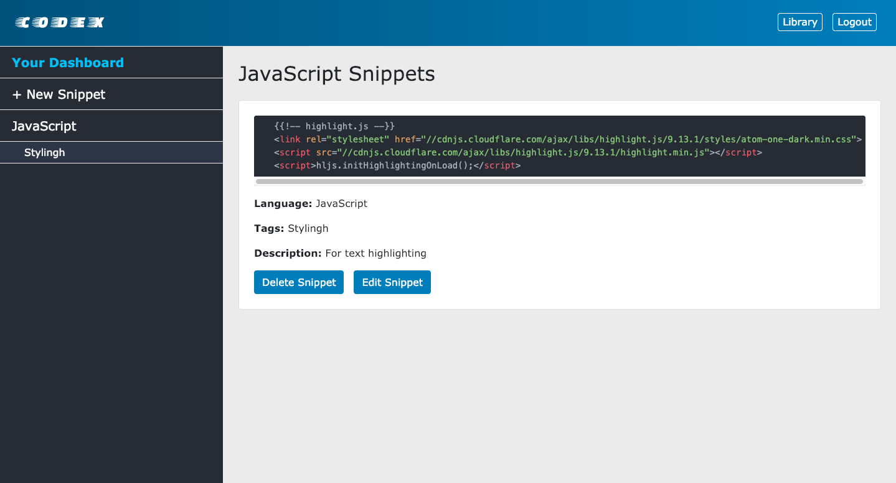
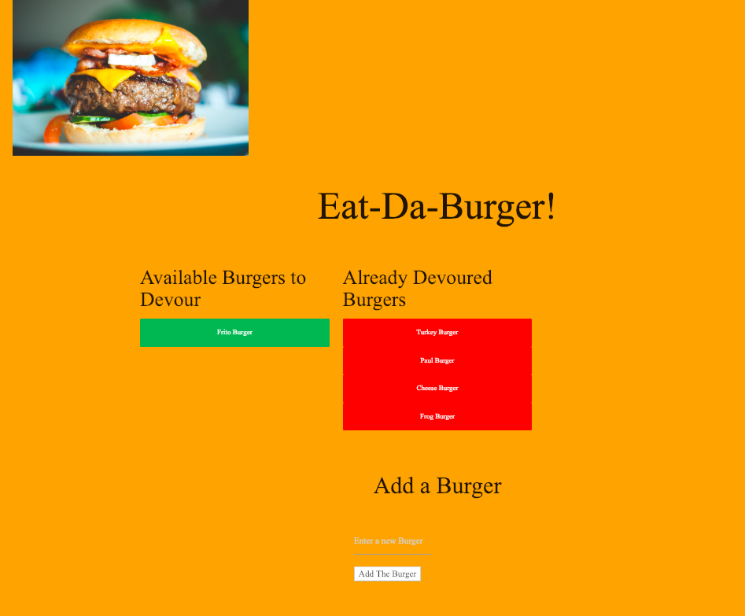
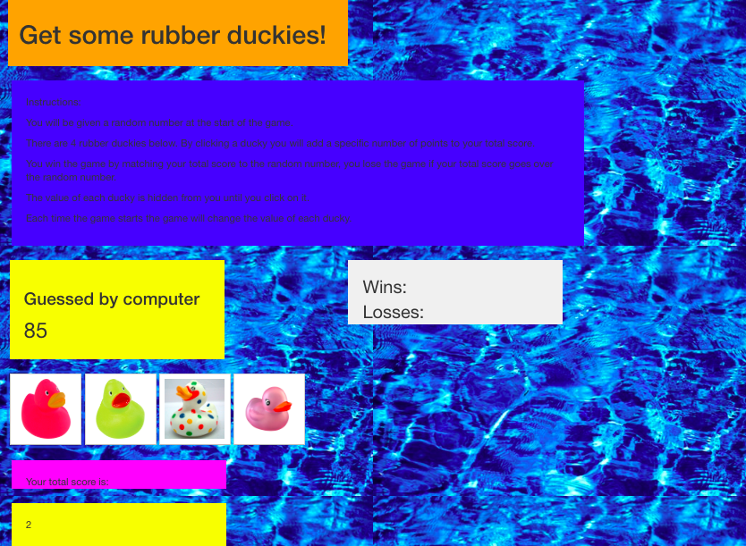

Paul Rogers
Paul is expert in Oracle supply chain and financials applications (concentrating on PO and OM). He has significant experience in building Oracle APEX applications and general deep knowledge in querying Oracle financials and supply chain table structures.
He is also knowledgeable in SQL & PL/SQL, HTML, CSS, JavaScript, Jquery, Ajax, Firebase, node.js MySQL, Express, Handlebars, Sequelize, Mongo and React. Several libraries used including Bootstrap and moment.js.
Paul has worked extensively with Oracle Applications and custom systems managing the implementation, data conversion, testing, development, documentation and user training aspects of system delivery. He served multiple times in functional and technical capacities (as consultant, team lead and program manager) in implementations of Oracle Applications, other systems at Oracle and as a consultant at large high-tech, manufacturing and federal and state government organizations. He has participated in multiple full project cycle implementations.
Experience
Senior Manager Operations/ Business Analyst
Managed numerous internal projects and built systems for the PMO Office in the Deal Management organization.
Project Manager for programs to enhance Oracle’s internal quoting and contracts systems (including Oracle CPQ) and create new tools for Deal Management and Sales Designed, created, tested and deployed several APEX applications
Sr Manager Operations for Supply Chain Management Oracle Apps - Sun Microsystems Integration
Consulting Technical Manager
Worked extensively with Oracle Applications managing the implementation, data conversion, testing, development, documentation and user training aspects of system delivery. Served multiple times in functional and technical capacities (as consultant, team lead and program manager) in implementations of Oracle Applications and related systems at large high-tech, manufacturing and federal and state government organizations. Participated in multiple full project cycle implementations for global companies.
Education
UC Berkeley Extension
New England College
Skills
- Oracle APEX
- MySQL
- PL/SQL
- Jquery
- Ajax
- Firebase
- Express
- Handlebars
- Sequelize
- Mongo
Portfolio
Here are some sample toy projects from my coding class. Click on the picture to see the deployed app.

Codex
Click here to see the Github Repo

Eat Da Burger
Click here to see the Github Repo
Click here to see the Github Repo

Train
Click here to see the Github Repo

Number Guess
Click here to see the Github Repo
Codex
Eat Da Burger
Click here to see the Github Repo